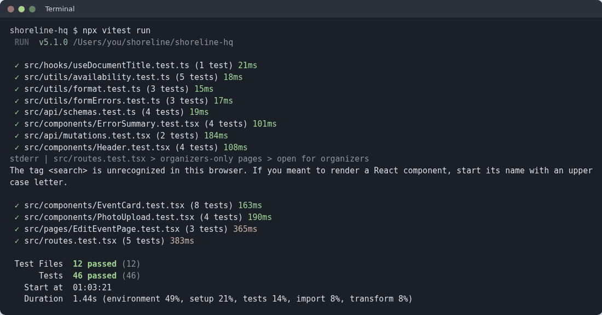

🖱️ Lesson 9.2: Interactions and Async
At the end of the last lesson you walked through the impact report and wrote down every place you type, click or wait for the API. Your 29 tests could check none of them: they looked at components but never touched one, and nothing in them ever waited for an answer. Today the tests learn to use the HQ the way an organizer does. They type into the edit form, upload a photo, tick someone off at the check-in desk and knock on an organizers-only door as a guest, and shoreline-api's own code answers every request, right inside the test run, with no server started.
🎯 Learning Objectives
By the end of this lesson, you will be able to:
- Click, type, tab and upload in tests with
user-event, and explain why each action is awaited - Answer the app's requests in tests with MSW 3 running the API's own code, reset it between tests and fail on requests nobody answers
- Wait for data with
findByandwaitFor, and replace one answer for one test withserver.use(), typed with the API's own types - Test whole pages through the app's real routes, including loaders, redirects and the organizers-only guard
- Test custom Hooks and TanStack Query mutations with
renderHook, including an optimistic update and its rollback
📦 Code for this lesson
Starting code: lesson-30-start.zip · Finished code: lesson-30-end.zip. Each folder has a README with the commands to run it. From this lesson on, npm test runs shoreline-api's own code inside the tests, so it still works without the API running.
In This Lesson
🎭 Tests That Act Like a Person
Most of what can go wrong in the HQ happens between renders: after a click, while a request is on its way, when the API says no. To test that, a test needs two new abilities. It has to act (click, type, press Tab, choose a file) the way a person does, and it has to wait for the app's requests to come back. And something has to answer those requests. Starting shoreline-api for every test run would be slow and fragile; pretending with hand-written fake answers would let the tests and the real API drift apart. This course does something better: the tests run shoreline-api's own code, the same file node server.ts runs, right inside Vitest.
💡 Mental model: the training beach
New crew leaders practice on a training beach: the same tide tables, the same gear, the same sign-in sheets, but nobody gets hurt when something goes wrong, and the trainer can call "the tide is coming in early" whenever they like. The mock API is that training beach. Your tests use the real rules and the real sample data, they can reset the beach between drills (api.reset()), and a test can call a surprise for one drill only: "this time the server fails", "this time the photo is too big".
The request never leaves your computer: MSW (Mock Service Worker) catches it inside Node and hands it to the API's code, which returns a real Response with the real status codes, headers and messages. The app cannot tell the difference, and that is the point. A test that passes here passes against the same rules the server enforces.
🌱 Why this matters
Interaction tests are where testing pays for itself: forms, sign-in and permissions are what users touch and what breaks in production. "How do you test code that calls an API?" is a classic interview question, and "with a network-level mock that shares code with the real API" is a strong answer. This lesson is denser than the last one; if a section feels like a lot, that is the size of the topic, not a sign you are slow. Take the steps one at a time.
⌨️ Clicking and Typing with user-event
@testing-library/user-event plays the person at the keyboard. Each action fires the whole chain of events a browser would: a click is pointer down, mouse down, focus, pointer up, mouse up and click; typing a letter is a key down, a key press, an input event and a key up, for every letter. That is why a test with user-event catches the same things a person would, such as a button that only reacts to onMouseDown, or a field that cannot get focus.
The pattern is always the same: call userEvent.setup() before rendering, then await every action. The HQ's render helpers will do the setup for you and hand you the user:
})
+ it('opens and closes the details with a click', async () => {
+ const { user } = renderWithProviders(<EventCard event={makeEvent()} site={makeSite()} />)
+
+ await user.click(screen.getByRole('button', { name: 'Show details for Tide Pool Morning Cleanup' }))
+
+ // The same button, now named for what it does next
+ const button = screen.getByRole('button', { name: 'Hide details for Tide Pool Morning Cleanup' })
+ expect(button).toHaveAttribute('aria-expanded', 'true')
+ expect(screen.getByText(/Expect mud/)).toBeInTheDocument()
+
+ await user.click(button)
+ expect(screen.queryByText(/Expect mud/)).not.toBeInTheDocument()
+ })
+
+ it('opens the details from the keyboard', async () => {
+ const { user } = renderWithProviders(<EventCard event={makeEvent()} site={makeSite()} />)
+
+ // Tab moves through the card in order: the title's link, then the details button
+ await user.tab()
+ await user.tab()
+ expect(screen.getByRole('button', { name: /^Show details/ })).toHaveFocus()
+
+ await user.keyboard('{Enter}')
+ expect(screen.getByText(/Expect mud/)).toBeInTheDocument()
+ })
+
it('leaves out the meeting point and supplies in compact lists', () => {
useUiStore.getState().setDensity('compact')Every user-event action returns a Promise: the events are fired one after another, and React gets to finish its updates in between. await waits for all of that, so the next line sees the page after the click. The second test is an accessibility check for free: Tab twice must land on the details button, and Enter must open it, exactly as a keyboard user would do it.
| Action | What it does |
|---|---|
await user.click(element) | Moves the pointer to it and clicks (focus moves too) |
await user.type(element, 'text') | Clicks the field, then types each character |
await user.clear(element) | Selects everything in a field and deletes it |
await user.tab() | Presses Tab: focus moves to the next focusable element |
await user.keyboard('{Enter}') | Presses keys in the element that has focus; {Enter}, {Escape} and other names in braces, plain text as is |
await user.upload(input, file) | Chooses a File in an <input type="file">, as the file picker would |
await user.selectOptions(select, 'value') | Picks an option in a <select> |
You may also meet fireEvent from Testing Library: it fires a single event (fireEvent.click is only the click, without the pointer, focus or keyboard around it). It still works, but Testing Library recommends user-event for anything a person does, and this course uses it everywhere.
🧩 Version note: user-event 14.6.10
The course pins user-event 14.6.10, which came out just before this lesson was written (14.6.9 was two days older). It was checked again for this lesson: still the latest release, and every test and exercise here passes with it. If a newer 14.x is out when you install, it should behave the same.
🌊 The Mock API Inside the Tests
shoreline-api was built for this moment. Its core folder answers web-standard Request objects with web-standard Response objects and uses no Node features, and its msw folder has a function, createHandlers(), that turns that core into MSW request handlers. Copy both folders into src/mocks once (Step 1), and never edit them there: when shoreline-api changes, you copy them again.
import { http } from 'msw'
import { createApi, type ApiOptions } from '../core/api.ts'
/** Where the apps expect the API in development (VITE_API_URL in .env.local). */
export const API_URL = 'http://localhost:4000'
export function createHandlers(options: ApiOptions & { baseUrl?: string } = {}) {
const { baseUrl = API_URL, ...apiOptions } = options
const api = createApi(apiOptions)
const handlers = [
http.all(`${baseUrl}/api`, ({ request }) => api.handle(request)),
http.all(`${baseUrl}/api/*`, ({ request }) => api.handle(request)),
]
return { handlers, api }
}Two handlers send everything under /api to api.handle(request), and MSW 3 accepts the native Response it returns. createHandlers also hands back api itself, with reset() (the sample data, fresh) and data (the live data, for checking what a test saved). The HQ's tests share one mock server, set up in a small file of its own:
// The mock API for tests: shoreline-api's own code answers the app's requests inside the test run
import { setupServer } from 'msw/node'
import { createHandlers } from '../mocks/msw/handlers.ts'
// The same address the app sends its requests to (vite.config.ts sets it for tests)
export const API_URL = import.meta.env.VITE_API_URL
// api = the API's code with its sample data; handlers = MSW's way in to it
export const { handlers, api } = createHandlers({ baseUrl: API_URL })
export const server = setupServer(...handlers)
/** Every request the app sends from now on, written as 'PATCH /api/events/e08' */
export function recordRequests(): string[] {
const requests: string[] = []
server.events.on('request:start', ({ request }) => {
requests.push(`${request.method} ${new URL(request.url).pathname}`)
})
return requests
}setupServercomes frommsw/node: in Node, MSW intercepts requests inside the process (in a browser it would use a service worker instead, which Lesson 10.2's demo build does).baseUrlis the address the app sends requests to, so the handlers listen exactly where the app calls. Vitest has no.env.localon a fresh copy of the project or in a CI service, so the address comes from thetestblock invite.config.ts(Step 1). Measured:test.envwins over a learner's own.env.local, so every machine tests against the same address.recordRequests()listens to MSW'srequest:startevent and writes down every request as'GET /api/sites'. Tests use it to prove that something was not asked for.
The setup file starts the server once per test file, resets the API before every test, and puts everything back after every test:
// Runs before every test file (vite.config.ts → test.setupFiles)
import '@testing-library/jest-dom/vitest'
import { cleanup } from '@testing-library/react'
import { afterAll, afterEach, beforeAll, beforeEach } from 'vitest'
import { saveSession } from '../api/client.ts'
import { queryClient } from '../api/queries.ts'
import { useUiStore } from '../state/uiStore.ts'
import { api, server } from './server.ts'
// jsdom draws nothing, so it cannot scroll: React Router's ScrollRestoration calls this
window.scrollTo = () => {}
// In tests a failed request should fail at once: no retries with pauses in between
queryClient.setDefaultOptions({
queries: { ...queryClient.getDefaultOptions().queries, retry: false },
})
// Answer requests with the mock API. A request it does not know fails the test.
beforeAll(() => server.listen({ onUnhandledFrame: 'error' }))
// Every test starts from the sample data, with only the API's own handlers
beforeEach(() => api.reset())
afterEach(() => {
// Take the rendered components off the page, so each test starts with an empty one
cleanup()
// Forget the overrides a test added with server.use()
server.resetHandlers()
server.events.removeAllListeners()
// The app keeps state in modules, outside React: put each piece back the way the app starts
queryClient.clear()
saveSession(null)
useUiStore.setState(useUiStore.getInitialState())
localStorage.clear()
sessionStorage.clear()
})
afterAll(() => server.close())onUnhandledFrame: 'error'(MSW 3's name; older guides sayonUnhandledRequest, which is now a type error) makes any request no handler answers fail loudly instead of trying the real network. Measured, a request tohttp://127.0.0.1:4000instead oflocalhost: "[MSW] Error: intercepted a request without a matching request handler", and the app'sfetchfails. (MSW lets requests for common files such as pictures pass without the error.)retry: false: the app's cache retries a failed request twice, with a pause before each try (Lesson 7.1). Good for organizers on a shaky connection, bad for a test that wants to see the error now. Common Mistakes shows what happens without this line.server.resetHandlers()removes the answers a test added for itself, andremoveAllListeners()stopsrecordRequestslistening.window.scrollTo: jsdom draws nothing, so it has no scrolling; React Router'sScrollRestorationcalls it, and jsdom would print "Not implemented: Window's scrollTo() method" for every page change. A function that does nothing is the honest stand-in.
⏳ Waiting, and Changing One Answer
A request takes time, even to a mock API. Right after render, a page with a loader shows nothing of its own yet, so getBy fails at once (Common Mistakes has the measured message). Lesson 9.1's table had the answer waiting: the findBy queries return a Promise and keep looking until the element appears, for up to one second by default.
| Tool | Waits until… | Use it for |
|---|---|---|
await screen.findByRole(…) | The element appears | Data from the API, a page after a redirect, a message after saving |
await waitFor(() => expect(…)) | The check inside stops throwing | Things that are not elements: a function was called, a Hook's result changed |
getBy… after an awaited action | Does not wait | Whatever the action changed at once (the details opening after a click) |
A test with await in it is an async function, and Vitest waits for its Promise before it moves on. Inside, read it top to bottom like a story: act, wait for the result, check it.
One answer, for one test: server.use()
The mock API answers like the real one, so most tests need nothing else: a full cleanup really is full, a wrong password really gets a 401. But some answers are hard to cause on purpose: a server failure, or a photo the API refuses even though the app's own check let it through. server.use() puts a handler in front of the API's own, for the rest of this test only:
// This test only: the API refuses every photo with this status
server.use(
http.post(`${API_URL}/api/photos`, () =>
HttpResponse.json({ error, message } satisfies ApiErrorBody, { status }),
),
)http.post(url, resolver) matches one method and address (:signupId-style parameters work too), and HttpResponse.json(body, { status }) builds the answer. satisfies ApiErrorBody is a TypeScript touch worth copying: the made-up answer is checked against the API's own error type, so a typo such as error: 'too_large' is a compile error instead of a test that checks something the real API never sends. After the test, resetHandlers() in the setup file removes the override.
💡 Prefer the real rule over an override
Before you reach for server.use(), check whether the API's own rules can produce the answer. The edit form's server-side error in Step 4 needs no override: Weekend Cove Cleanup really has 18 people signed up, so the API really refuses a capacity of 10. Overrides are for what you cannot cause: failures, rare statuses, and slow or odd answers.
🗺️ Whole Pages: Routes, Loaders and Guards
Lesson 9.1's renderWithProviders puts one component at one route. That is right for a card or a header, but the HQ's pages depend on their routes: the edit page's data comes from editEventLoader, the guard is a loader on a pathless route, and saving navigates to another page. A one-route router has none of that. There were two ways to give the tests real routes:
| Option | Gains | Costs |
|---|---|---|
A catch-all * route in renderWithProviders | Links and navigate() land somewhere instead of React Router's 404 | No loaders, no guards: the test checks a page that never exists in the app |
| Export the app's route array and render it in a memory router | The real loaders, guards, redirects, error pages and layout; a test checks what a person gets | A small move in App.tsx; the test starts at an address instead of a component |
The course takes the second: the guards are the rule most worth testing, and they only exist on the real routes. The array moves to its own file, routes.tsx, because a file that exports a component (App) and something else is what oxlint's only-export-components rule warns about. App.tsx imports it:
import { QueryClientProvider } from '@tanstack/react-query'
import { createBrowserRouter } from 'react-router'
import { RouterProvider } from 'react-router/dom'
import { queryClient } from './api/queries.ts'
import { AuthProvider } from './auth/AuthProvider.tsx'
import { routes } from './routes.tsx'
// The browser's router: the address bar decides which of the HQ's routes is shown
const router = createBrowserRouter(routes)
export function App() {
return (
// The cache is outside everything else: every page and loader shares it
<QueryClientProvider client={queryClient}>
<AuthProvider>
<RouterProvider router={router} />
</AuthProvider>
</QueryClientProvider>
)
}And the render helpers share their providers, with a new renderApp(route, session) next to the old helper:
// Render a component the way the app shows it: inside the cache, the sign-in state and a router
import { QueryClientProvider } from '@tanstack/react-query'
import { render } from '@testing-library/react'
import userEvent from '@testing-library/user-event'
import type { ReactElement } from 'react'
import { createMemoryRouter, type DataRouter } from 'react-router'
import { RouterProvider } from 'react-router/dom'
import { saveSession, type Session } from '../api/client.ts'
import { queryClient } from '../api/queries.ts'
import { AuthProvider } from '../auth/AuthProvider.tsx'
import { routes } from '../routes.tsx'
export interface RenderOptions {
/** The address the test starts at (default '/') */
route?: string
/** The route pattern the component is shown at, for useParams (default: the same as route) */
path?: string
/** Who is signed in (default: nobody) */
session?: Session | null
}
// The providers App.tsx puts around the router, around a router made for the test
function renderRouter(router: DataRouter, session: Session | null) {
saveSession(session)
// A pretend person who types and clicks: set up before rendering
const user = userEvent.setup()
const result = render(
<QueryClientProvider client={queryClient}>
<AuthProvider>
<RouterProvider router={router} />
</AuthProvider>
</QueryClientProvider>,
)
return { ...result, router, user }
}
/** One component, shown at one route */
export function renderWithProviders(
ui: ReactElement,
{ route = '/', path = route, session = null }: RenderOptions = {},
) {
// A router that keeps its history in memory: no browser address bar needed
const router = createMemoryRouter([{ path, element: ui }], { initialEntries: [route] })
return renderRouter(router, session)
}
/** The whole app at an address: the layout, the real routes, their loaders and guards */
export function renderApp(route: string, session: Session | null = null) {
const router = createMemoryRouter(routes, { initialEntries: [route] })
return renderRouter(router, session)
}DataRouter is React Router's type for what createMemoryRouter and createBrowserRouter return. The helpers return it, so a test can read router.state.location.pathname to see where a click or a redirect went.
Testing a guard
Lesson 6.3 gave the organizers-only pages a rule with two halves: guests are sent to sign in with ?next=, and they are sent away before any request goes out, which is why editEventLoader calls organizersOnly(args) first. The second half is invisible on screen, so only a test can keep it true:
it('send guests to sign in first, without asking the API for anything', async () => {
const requests = recordRequests()
const { router } = renderApp('/events/e08/edit')
expect(await screen.findByRole('heading', { level: 1, name: 'Sign in' })).toBeInTheDocument()
expect(router.state.location.pathname).toBe('/sign-in')
expect(router.state.location.search).toBe('?next=%2Fevents%2Fe08%2Fedit')
// The guard ran first: no cleanup, no sites, nothing a guest may not see
expect(requests).toEqual([])
})Step 5 breaks the rule on purpose to watch the test catch it.
🪝 Testing Hooks
A Hook can only run inside a component, so renderHook renders a tiny one for you that calls your Hook and keeps its latest return value in result.current. rerender(newProps) calls it again with new arguments, and unmount() removes it, which runs the effects' cleanups:
import { renderHook } from '@testing-library/react'
import { describe, expect, it } from 'vitest'
import { useDocumentTitle } from './useDocumentTitle.ts'
describe('useDocumentTitle', () => {
it('names the tab while the component is shown, then puts the old name back', () => {
document.title = 'Shoreline Crew HQ'
// renderHook calls the Hook inside a small test component; props can change later
const { rerender, unmount } = renderHook(({ title }) => useDocumentTitle(title), {
initialProps: { title: 'Beach sites' },
})
expect(document.title).toBe('Beach sites · Shoreline Crew HQ')
rerender({ title: 'Cleanup events' })
expect(document.title).toBe('Cleanup events · Shoreline Crew HQ')
unmount()
expect(document.title).toBe('Shoreline Crew HQ')
})
})The initialProps object gives the callback's parameter its type: TypeScript knows title is a string, and rerender({ title: 3 }) would not compile. Hooks that need a provider get a wrapper component. That is how Step 7 tests the most delicate code in the HQ, the optimistic check-in from Lesson 7.2: renderHook(() => useMutation(markMutation('e17', 'v01')), { wrapper }), then result.current.mutate(…), then a look into the cache before and after the API answers.
💡 When to use renderHook
Test a Hook on its own when it is shared logic with no screen of its own (useDebouncedValue, a mutation's cache handling). When a Hook only exists to serve one component, test the component instead: what a person sees is the better contract.
⚠️ Common Mistakes
⚠️ Forgetting await before a user-event action
user.click(screen.getByRole('button', { name: /^Show details/ }))
expect(screen.getByText(/Expect mud/)).toBeInTheDocument()Measured: the click starts, but the next line checks the page before it has happened:
Expected output (shortened)
× opens the details with a click 72ms
...
FAIL src/components/NoAwait.test.tsx > EventCard > opens the details with a click
TestingLibraryElementError: Unable to find an element with the text: /Expect mud/. This could be because the text is broken up by multiple elements. In this case, you can provide a function for your text matcher to make your matcher more flexible.Put await before every user.… call (and make the test async). The error says the text is not there, which is true at that moment: the test simply looked too early.
⚠️ getBy for data that is still loading
renderApp('/events/e08/edit', organizer)
expect(screen.getByLabelText('Title (5 to 80 characters)')).toHaveValue('Weekend Cove Cleanup')Measured: the page printed in the error is the app's first-load placeholder, because the loader has not finished:
Expected output (shortened)
FAIL src/pages/GetBy.test.tsx > EditEventPage > starts from the saved title
TestingLibraryElementError: Unable to find a label with the text of: Title (5 to 80 characters)
...
<body>
<div>
<p
role="status"
>
Loading Shoreline Crew HQ…
</p>Use await screen.findByLabelText(…) for the first thing that depends on the API; after it, the rest of the page is there and getBy is fine.
⚠️ Leaving the app's retries on in tests
Measured without the retry: false lines in setup.ts: the 500 test failed after one second, although the app was doing exactly the right thing. It was still retrying when findByRole gave up:
Expected output (shortened)
× says what went wrong and offers to try again 1016ms
...
FAIL src/routes.test.tsx > a page whose data does not load > says what went wrong and offers to try again
TestingLibraryElementError: Unable to find role="alert"
...
Test Files 1 failed (1)
Tests 1 failed | 4 passed (5)A test that fails after a round 1000 ms, or that passes alone and times out on a slow machine, is often waiting for something with a built-in delay: retries, debouncing, animations. Turn the delay off for tests, or control the clock (Exercise 1).
⚠️ MSW 2 code in an MSW 3 project
server.listen({ onUnhandledRequest: 'error' })Most MSW guides online are for version 2, and the option was renamed. Measured with npx tsc -b:
Expected output
src/test/OldOption.ts:3:17 - error TS2353: Object literal may only specify known properties, and 'onUnhandledRequest' does not exist in type 'PartialObjectDeep<SharedOptions, { recurseIntoArrays: false; allowUndefinedInNonTupleArrays: false; }>'.
3 server.listen({ onUnhandledRequest: 'error' })
~~~~~~~~~~~~~~~~~~
Found 1 error in src/test/OldOption.ts:3Use onUnhandledFrame. (Even older guides import rest from msw; that was MSW 1. Today it is http and HttpResponse.)
⚠️ A request the mock API does not answer
If the app calls an address the handlers do not cover (here 127.0.0.1 instead of localhost, as happens when .env.local and the tests disagree), measured:
Expected output (shortened)
[MSW] Error: intercepted a request without a matching request handler:
• GET http://127.0.0.1:4000/api/events
If you still wish to intercept this unhandled request, please create a request handler for it.
Read more: https://mswjs.io/docs/http/intercepting-requests
...
FAIL src/test/Unhandled.test.ts > asks a server the mock API does not stand in for
TypeError: fetch failed
Caused by: InternalError: [MSW] Cannot bypass a request when using the "error" strategy for the "onUnhandledFrame" option.Read MSW's message first: it names the method and the full address. Then compare the address with API_URL. Without any address at all (no .env.local and no test.env), measured: every page test shows the app's "Something went wrong on this page", because client.ts throws "VITE_API_URL is not set" inside the loader.
🛠️ Project: Tests That Click and Wait
Step 1 installs the tools and puts the mock API into the tests, Step 2 writes the first clicks, Step 3 gives the tests the app's real routes, Steps 4 to 6 test the edit form, the guards and the uploads, Step 7 tests two Hooks including the optimistic check-in, and Step 8 runs everything. Keep npm test running in watch mode in one terminal; you do not need shoreline-api or the dev server.
Step 1: Install, and bring the mock API into the tests (12 min)
In shoreline-hq, install the two packages as development dependencies:
npm install --save-dev @testing-library/user-event mswExpected output
added 42 packages, and audited 192 packages in 3s
46 packages are looking for funding
run `npm fund` for details
found 0 vulnerabilitiesThe course was checked with user-event 14.6.10 and MSW 3.0.5. Now copy shoreline-api's core and msw folders into a new src/mocks folder (your file manager's copy and paste works too). On macOS and Linux, from shoreline-hq:
mkdir -p src/mocks
cp -r ../shoreline-api/core ../shoreline-api/msw src/mocks/In PowerShell on Windows:
New-Item -ItemType Directory -Force src/mocks
Copy-Item -Recurse ../shoreline-api/core, ../shoreline-api/msw src/mocks/You should now have src/mocks/core/api.ts, seed.ts, types.ts and src/mocks/msw/handlers.ts. npx tsc -b and npm run lint stay clean: the API was written to the same strict settings as the HQ. Nothing in the app imports these files, so they never reach the bundle. Next, give the tests the API's address in vite.config.ts:
setupFiles: ['./src/test/setup.ts'],
include: ['src/**/*.test.{ts,tsx}'],
+ env: { VITE_API_URL: 'http://localhost:4000' },
},
})Create src/test/server.ts and replace src/test/setup.ts with the two files from "The Mock API Inside the Tests". Finally, the test sessions now reach the API's code, which only accepts tokens it knows. shoreline-api has two development tokens for exactly this (the same ones its README uses with curl). In src/test/factories.ts:
}
-/** Maya, signed in as an organizer */
+/** Maya, signed in as an organizer (dev-organizer: a token the API accepts without signing in) */
export const organizer: Session = {
- token: 'test-organizer',
+ token: 'dev-organizer',
user: { id: 'v01', name: 'Maya Okafor', email: 'maya.okafor@example.com', role: 'organizer' },
}
-/** Theo, signed in as a volunteer */
+/** Theo, signed in as a volunteer (dev-volunteer: the API's volunteer token) */
export const volunteer: Session = {
- token: 'test-volunteer',
+ token: 'dev-volunteer',
user: { id: 'v04', name: 'Theo Nakamura', email: 'theo.nakamura@example.com', role: 'volunteer' },
}Save: all 29 tests from Lesson 9.1 should still pass, now with the mock server listening.
Step 2: The first clicks (6 min)
In src/test/render.tsx, add the user-event setup to renderWithProviders for now: import userEvent, call const user = userEvent.setup() before render, and return user along with the rest (Step 3 replaces the whole file with the version shown in "Whole Pages", which does the same). Then add the two tests from "Clicking and Typing with user-event" to EventCard.test.tsx, after the details-button test.
Expected output (from npx vitest run src/components/EventCard.test.tsx)
RUN v5.1.0 /Users/you/shoreline/shoreline-hq
✓ src/components/EventCard.test.tsx (8 tests) 137ms
✓ EventCard (8)
✓ links the title to the cleanup page 54ms
✓ shows the date, the status, the meeting point and the spots left 8ms
✓ says when the site is not known yet 5ms
✓ has a details button named after the cleanup, closed at first 6ms
✓ opens and closes the details with a click 31ms
✓ opens the details from the keyboard 21ms
✓ leaves out the meeting point and supplies in compact lists 3ms
✓ shows supplies in roomy lists (the store was reset after the last test) 3ms
Test Files 1 passed (1)
Tests 8 passed (8)
Start at 00:57:49
Duration 989ms (environment 39%, setup 17%, tests 15%, import 14%, transform 14%)Make one fail on purpose: change /Expect mud/ in the keyboard test to /Expect sand/, read the message, and put it back.
Step 3: The app's real routes in the tests (10 min)
Create src/routes.tsx. Move the route array out of App.tsx into it, together with the imports it needs (the pages, loaders, guards, signInAction, AppLayout), name it routes, export it, and type it as RouteObject[]. The routes themselves do not change, apart from one new line explained below:
// Every address the HQ knows, and the page it shows there. App.tsx gives these routes to the
// browser's router; the tests give the same ones to a router in memory (Lesson 9.2).
import type { RouteObject } from 'react-router'
import { guestsOnly, onlyWhenThePathChanges, organizersOnly } from './auth/guards.ts'
// ...
export const routes: RouteObject[] = [
{
path: '/',
element: <AppLayout />,
// Shown on the very first load while the first page's loaders fetch its data
hydrateFallbackElement: <p role="status">Loading Shoreline Crew HQ…</p>,
children: [
{
// A route without a path: it adds the error page and keeps the layout around it
errorElement: <ErrorPage />,
children: [
// ...
],
},
],
},
]Replace App.tsx and src/test/render.tsx with the versions in "Whole Pages". Then create src/pages/EditEventPage.test.tsx with only its first test from Step 4 and watch it run. Measured before the new line in routes.tsx and before the scrollTo stub in setup.ts, the test passed but printed this on stderr:
Expected output (shortened)
stderr | src/pages/EditEventPage.test.tsx > EditEventPage > saves new details and shows the cleanup
No `HydrateFallback` element provided to render during initial hydration
Not implemented: Window's scrollTo() method
Not implemented: Window's scrollTo() method
Not implemented: Window's scrollTo() method
Not implemented: Window's scrollTo() methodstderr lines never fail a test, but they are worth reading, and these two are findings. The second is jsdom (no scrolling, fixed by the stub). The first is about the app: on the very first load, the HQ shows nothing while the first page's loaders fetch (the same React Router code warns about it in the browser's console during development). hydrateFallbackElement on the layout route fills that gap with a status message, for the tests and for organizers on a slow connection.
Step 4: The edit form, against the API's rules (10 min)
Complete src/pages/EditEventPage.test.tsx:
import { screen } from '@testing-library/react'
import { describe, expect, it } from 'vitest'
import { organizer } from '../test/factories.ts'
import { renderApp } from '../test/render.tsx'
import { api, recordRequests } from '../test/server.ts'
describe('EditEventPage', () => {
it('saves new details and shows the cleanup', async () => {
const { user, router } = renderApp('/events/e08/edit', organizer)
// The loader fetches the cleanup first: wait for the form
const title = await screen.findByLabelText('Title (5 to 80 characters)')
expect(title).toHaveValue('Weekend Cove Cleanup')
await user.clear(title)
await user.type(title, 'Weekend Cove Big Sweep')
await user.click(screen.getByRole('button', { name: 'Save changes' }))
// After saving, the app goes to the cleanup's page, which shows the new title
expect(await screen.findByRole('heading', { level: 1, name: 'Weekend Cove Big Sweep' })).toBeInTheDocument()
expect(router.state.location.pathname).toBe('/events/e08')
// And the API has it: the same code the real server runs
expect(api.data.events.find((event) => event.id === 'e08')?.title).toBe('Weekend Cove Big Sweep')
})
it("shows the form's own message and sends nothing", async () => {
const { user } = renderApp('/events/e08/edit', organizer)
const title = await screen.findByLabelText('Title (5 to 80 characters)')
const requests = recordRequests()
await user.clear(title)
await user.click(screen.getByRole('button', { name: 'Save changes' }))
expect(await screen.findByText('Add a title.')).toBeInTheDocument()
expect(title).toHaveAttribute('aria-invalid', 'true')
expect(requests).toEqual([])
})
it("puts the API's message under the field when its rules say no", async () => {
const { user } = renderApp('/events/e08/edit', organizer)
const capacity = await screen.findByLabelText('Volunteers needed (1 to 200)')
// Weekend Cove Cleanup is full: 18 people hold a spot. Only the API knows that.
await user.clear(capacity)
await user.type(capacity, '10')
await user.click(screen.getByRole('button', { name: 'Save changes' }))
expect(
await screen.findByText('18 volunteers already hold a spot: capacity cannot be lower.'),
).toBeInTheDocument()
expect(capacity).toHaveFocus()
expect(screen.getByText('Some fields need attention.')).toBeInTheDocument()
})
})- The first test is a whole journey: the loader fetches, the person edits and saves, React Hook Form and Zod check, the mutation sends
PATCH, the app navigates, and the event page loads the new title.api.dataconfirms the API saved it. - The second proves the form's own check stops the save:
recordRequests()starts after the page has loaded, so it sees only what the click caused, which is nothing. - The third gets a real 400 from the API's rule (no override) and checks Lesson 8.1's promise: the API's message under the field, and the focus on it.
Expected output
RUN v5.1.0 /Users/you/shoreline/shoreline-hq
✓ src/pages/EditEventPage.test.tsx (3 tests) 323ms
✓ EditEventPage (3)
✓ saves new details and shows the cleanup 223ms
✓ shows the form's own message and sends nothing 41ms
✓ puts the API's message under the field when its rules say no 54ms
Test Files 1 passed (1)
Tests 3 passed (3)
Start at 00:57:53
Duration 1.05s (tests 33%, environment 30%, import 13%, setup 12%, transform 11%)Step 5: Guards, and a page that fails (10 min)
Create src/routes.test.tsx:
import { screen } from '@testing-library/react'
import { http, HttpResponse } from 'msw'
import { describe, expect, it } from 'vitest'
import { organizer, volunteer } from './test/factories.ts'
import { renderApp } from './test/render.tsx'
import { API_URL, recordRequests, server } from './test/server.ts'
describe('organizers-only pages', () => {
it('send guests to sign in first, without asking the API for anything', async () => {
const requests = recordRequests()
const { router } = renderApp('/events/e08/edit')
expect(await screen.findByRole('heading', { level: 1, name: 'Sign in' })).toBeInTheDocument()
expect(router.state.location.pathname).toBe('/sign-in')
expect(router.state.location.search).toBe('?next=%2Fevents%2Fe08%2Fedit')
// The guard ran first: no cleanup, no sites, nothing a guest may not see
expect(requests).toEqual([])
})
it('turn volunteers away with a 403 page', async () => {
renderApp('/volunteers', volunteer)
expect(await screen.findByRole('heading', { level: 1, name: 'Organizers only' })).toBeInTheDocument()
expect(screen.queryByRole('heading', { name: 'Volunteers' })).not.toBeInTheDocument()
})
it('open for organizers', async () => {
renderApp('/volunteers', organizer)
expect(await screen.findByRole('heading', { level: 1, name: 'Volunteers' })).toBeInTheDocument()
expect(await screen.findByText('Found 24 people.')).toBeInTheDocument()
})
it('come back after signing in', async () => {
const { user, router } = renderApp('/events/new')
await user.type(await screen.findByLabelText('Email'), 'maya.okafor@example.com')
await user.type(screen.getByLabelText('Password'), 'shoreline-demo')
await user.click(screen.getByRole('button', { name: 'Sign in' }))
expect(await screen.findByRole('heading', { level: 1, name: 'Plan a cleanup' })).toBeInTheDocument()
expect(router.state.location.pathname).toBe('/events/new')
})
})
describe('a page whose data does not load', () => {
it('says what went wrong and offers to try again', async () => {
server.use(
http.get(`${API_URL}/api/events`, () =>
HttpResponse.json({ error: 'server_error', message: 'Down for repairs.' }, { status: 500 }),
),
)
const { user } = renderApp('/events')
expect(await screen.findByRole('alert')).toHaveTextContent('The server had a problem (500).')
// The API is back: Try again asks once more
server.resetHandlers()
await user.click(screen.getByRole('button', { name: 'Try again' }))
expect(await screen.findByText('Weekend Cove Cleanup')).toBeInTheDocument()
})
})The four guard tests cover the whole rule: guests (no request), volunteers (403 page), organizers (the page), and the way back after signing in through the real sign-in form and the API's real password check. The last test fails GET /api/events for one moment, then calls server.resetHandlers() itself, which is what "the server is back" looks like, and clicks Try again.
Expected output
RUN v5.1.0 /Users/you/shoreline/shoreline-hq
stderr | src/routes.test.tsx > organizers-only pages > open for organizers
The tag <search> is unrecognized in this browser. If you meant to render a React component, start its name with an uppercase letter.
✓ src/routes.test.tsx (5 tests) 342ms
✓ organizers-only pages (4)
✓ send guests to sign in first, without asking the API for anything 75ms
✓ turn volunteers away with a 403 page 17ms
✓ open for organizers 58ms
✓ come back after signing in 135ms
✓ a page whose data does not load (1)
✓ says what went wrong and offers to try again 52ms
Test Files 1 passed (1)
Tests 5 passed (5)
Start at 00:57:55
Duration 1.07s (tests 34%, environment 30%, import 13%, setup 12%, transform 11%)The stderr note is jsdom again: it does not know the <search> element yet (browsers do), and React warns about the unknown tag. The page still works and the test passes; Lesson 9.3's real browser has no such gap. Now break the rule the first test protects. In src/pages/loaders.ts, comment out organizersOnly(args) in editEventLoader and save:

Expected output (shortened)
FAIL src/routes.test.tsx > organizers-only pages > send guests to sign in first, without asking the API for anything
AssertionError: expected [ 'GET /api/events/e08', …(1) ] to deeply equal []
...
- Expected
+ Received
- []
+ [
+ "GET /api/events/e08",
+ "GET /api/sites",
+ ]
...
Test Files 1 failed (1)
Tests 1 failed | 4 passed (5)The guest still ends up on the sign-in page (the guard route's own loader redirects), so a person clicking through would see nothing wrong. But the child loader already asked the API for the cleanup and the sites, and the test names both requests. Put the line back.
Step 6: Uploads, and answers you choose (10 min)
Create src/components/PhotoUpload.test.tsx:
import { screen, waitFor } from '@testing-library/react'
import userEvent from '@testing-library/user-event'
import { http, HttpResponse } from 'msw'
import { describe, expect, it, vi } from 'vitest'
import type { ApiErrorBody, Photo } from '../api/types.ts'
import { organizer } from '../test/factories.ts'
import { renderWithProviders } from '../test/render.tsx'
import { API_URL, recordRequests, server } from '../test/server.ts'
import { PhotoUpload } from './PhotoUpload.tsx'
// A tiny file with a name and a type: the API checks the type and the size, not the picture
function photoFile(name: string, type: string, bytes = 2048) {
return new File([new Uint8Array(bytes)], name, { type })
}
// What POST /api/photos answers: the saved photo
const savedPhoto: Photo = {
id: 'p1',
url: `${API_URL}/api/photos/p1`,
contentType: 'image/jpeg',
bytes: 2048,
uploadedBy: 'v01',
createdAt: '2026-07-04T18:00:00.000Z',
}
// The props the form passes: vi.fn() records every call, so the test can check them
function renderUpload() {
const onUploaded = vi.fn()
const view = renderWithProviders(
<PhotoUpload photos={[]} onUploaded={onUploaded} onRemove={vi.fn()} />,
{ session: organizer },
)
return { ...view, onUploaded, input: screen.getByLabelText(/^Add a photo/) }
}
describe('PhotoUpload', () => {
it('uploads a JPEG as form data and hands the saved photo to the form', async () => {
// jsdom's File cannot be read by the API's code in Node, so this answer is the test's own
let contentType: string | null = null
server.use(
http.post(`${API_URL}/api/photos`, ({ request }) => {
contentType = request.headers.get('Content-Type')
return HttpResponse.json(savedPhoto, { status: 201 })
}),
)
const { user, input, onUploaded } = renderUpload()
await user.upload(input, photoFile('bags-at-the-stairs.jpg', 'image/jpeg'))
await waitFor(() => expect(onUploaded).toHaveBeenCalledTimes(1))
expect(onUploaded).toHaveBeenCalledWith({
id: 'p1',
url: savedPhoto.url,
name: 'bags-at-the-stairs.jpg',
})
// fetch wrote the multipart header and its boundary (Lesson 8.2): the app did not
expect(contentType).toMatch(/^multipart\/form-data; boundary=/)
})
it('refuses a GIF before sending anything', async () => {
const { input, onUploaded } = renderUpload()
const requests = recordRequests()
// user-event skips files that do not match accept, like a file picker. Some pickers let
// people choose "All files": applyAccept: false chooses it anyway.
const user = userEvent.setup({ applyAccept: false })
await user.upload(input, photoFile('crew-photo.gif', 'image/gif'))
expect(screen.getByText('crew-photo.gif is not a JPEG, PNG or WebP image.')).toBeInTheDocument()
expect(input).toHaveAttribute('aria-invalid', 'true')
expect(requests).toEqual([])
expect(onUploaded).not.toHaveBeenCalled()
})
it.each([
[413, 'payload_too_large', 'Photos must be 5 MB or smaller.'],
[415, 'unsupported_media_type', 'Photos must be JPEG, PNG or WebP images.'],
] as const)('shows the message of a %i answer', async (status, error, message) => {
// This test only: the API refuses every photo with this status
server.use(
http.post(`${API_URL}/api/photos`, () =>
HttpResponse.json({ error, message } satisfies ApiErrorBody, { status }),
),
)
const { user, input, onUploaded } = renderUpload()
await user.upload(input, photoFile('bags-at-the-stairs.jpg', 'image/jpeg'))
expect(
await screen.findByText(`bags-at-the-stairs.jpg was not uploaded. ${message}`),
).toBeInTheDocument()
expect(onUploaded).not.toHaveBeenCalled()
})
})vi.fn()makes a mock function: it does nothing, but remembers every call, sotoHaveBeenCalledWithcan check what the component handed to the form.expect.any(String)and friends match "any value of this kind" inside such checks.- The JPEG test answers for itself. Measured: when the API's code reads a
Filemade by jsdom, Node'sfetchfails ("Request body length does not match content-length header", which the app shows as "Could not reach the server"). jsdom's files and Node's networking do not fully agree yet. So this one test answers201itself, and checks what it can: the request was multipart form data with a boundary thatfetchwrote, not the app. The real upload, with real bytes, is a job for Lesson 9.3's real browser. - The GIF test needs its own
user. Measured: with the default setup, user-event skips a file that does not match the input'sacceptlist, just as a file picker hides it, and nothing happens at all.applyAccept: falsechooses it anyway, as a person can by switching the picker to "All files". - The 413 and 415 tests are one
it.eachwith a typed table (as constkeeps the status numbers and error codes as literal types, whichsatisfies ApiErrorBodythen checks).
Expected output
RUN v5.1.0 /Users/you/shoreline/shoreline-hq
✓ src/components/PhotoUpload.test.tsx (4 tests) 161ms
✓ PhotoUpload (4)
✓ uploads a JPEG as form data and hands the saved photo to the form 96ms
✓ refuses a GIF before sending anything 19ms
✓ shows the message of a 413 answer 19ms
✓ shows the message of a 415 answer 22ms
Test Files 1 passed (1)
Tests 4 passed (4)
Start at 00:58:00
Duration 920ms (environment 37%, tests 19%, setup 15%, import 15%, transform 14%)Step 7: Hooks, and the optimistic check-in (12 min)
Create src/hooks/useDocumentTitle.test.ts with the test from "Testing Hooks". Then the mutation behind today's check-in desk. Create src/api/mutations.test.tsx:
import { QueryClientProvider, useMutation } from '@tanstack/react-query'
import { renderHook, waitFor } from '@testing-library/react'
import { http, HttpResponse } from 'msw'
import type { ReactNode } from 'react'
import { describe, expect, it } from 'vitest'
import { organizer } from '../test/factories.ts'
import { API_URL, server } from '../test/server.ts'
import { saveSession } from './client.ts'
import { markMutation } from './mutations.ts'
import { eventsQuery, queryClient, rosterQuery } from './queries.ts'
import type { ApiErrorBody } from './types.ts'
// renderHook renders a Hook inside a tiny test component; the wrapper gives it the cache
function withCache({ children }: { children: ReactNode }) {
return <QueryClientProvider client={queryClient}>{children}</QueryClientProvider>
}
// Today's check-in desk at the Tide Pool Morning Cleanup, as Maya sees it
const roster = rosterQuery('e17', 'v01')
/** The status of one sign-up in the cached roster */
function cachedStatus(signupId: string) {
return queryClient.getQueryData(roster.queryKey)?.find((entry) => entry.id === signupId)?.status
}
async function deskWithRoster() {
saveSession(organizer)
// Fill the cache the way the page's query would: a real request to the mock API
const entries = await queryClient.query(roster)
const first = entries.find((entry) => entry.status === 'confirmed')
if (first === undefined) throw new Error('The sample data has no confirmed sign-up for e17')
const { result } = renderHook(() => useMutation(markMutation('e17', 'v01')), { wrapper: withCache })
return { result, signupId: first.id }
}
describe('markMutation', () => {
it('saves a check-in and marks the lists as out of date', async () => {
const { result, signupId } = await deskWithRoster()
// A list of cleanups someone looked at earlier
const { queryKey: listKey } = eventsQuery('perPage=50', 'v01')
queryClient.setQueryData(listKey, {
items: [],
page: { page: 1, perPage: 50, total: 0, totalPages: 0 },
})
result.current.mutate({ signupId, mark: 'attended' })
await waitFor(() => expect(result.current.isSuccess).toBe(true))
expect(cachedStatus(signupId)).toBe('attended')
// ['events'] was invalidated: the next time a list is shown, it is fetched again
expect(queryClient.getQueryState(listKey)?.isInvalidated).toBe(true)
})
it('shows the mark at once, and takes it back when the API says no', async () => {
const { result, signupId } = await deskWithRoster()
// What the cache said while the request was on its way to the API
let statusDuringRequest: string | undefined
server.use(
http.patch(`${API_URL}/api/signups/:signupId`, () => {
statusDuringRequest = cachedStatus(signupId)
const body: ApiErrorBody = { error: 'server_error', message: 'Something went wrong.' }
return HttpResponse.json(body, { status: 500 })
}),
)
result.current.mutate({ signupId, mark: 'attended' })
await waitFor(() => expect(result.current.isError).toBe(true))
expect(statusDuringRequest).toBe('attended')
expect(cachedStatus(signupId)).toBe('confirmed')
})
})queryClient.query(roster)fills the cache the way the page's loader does: a real request to the mock API, as Maya. The first confirmed sign-up comes from the sample data, so the test needs no hard-coded id.- The first test checks both halves of a successful save: the cached roster has the new mark, and every list of cleanups is marked out of date (
isInvalidated), so the spots left are fetched again the next time a list is shown. - The second test's override does something clever: before it answers 500, it looks into the cache. That records what the desk showed while the request was on its way: already "attended", which is what optimistic means. After the error, the cache is back to "confirmed".
Expected output (from npx vitest run src/hooks src/api/mutations.test.tsx)
RUN v5.1.0 /Users/you/shoreline/shoreline-hq
✓ src/hooks/useDocumentTitle.test.ts (1 test) 17ms
✓ src/api/mutations.test.tsx (2 tests) 160ms
Test Files 2 passed (2)
Tests 3 passed (3)
Start at 00:58:06
Duration 680ms (environment 54%, setup 23%, tests 17%, transform 4%, import 1%, worker 1%)Prove the rollback test is guarding something: in src/api/mutations.ts, delete the onError option of markMutation (with its comment) and save:
Expected output (shortened)
FAIL src/api/mutations.test.tsx > markMutation > shows the mark at once, and takes it back when the API says no
AssertionError: expected 'attended' to be 'confirmed' // Object.is equality
Expected: "confirmed"
Received: "attended"
...
❯ src/api/mutations.test.tsx:70:36
68| await waitFor(() => expect(result.current.isError).toBe(true))
69| expect(statusDuringRequest).toBe('attended')
70| expect(cachedStatus(signupId)).toBe('confirmed')
| ^
71| })Without the rollback, the desk would keep showing someone as checked in although the API never saved it: the kind of bug that only shows up on the beach, on a bad connection. Undo the deletion.
Step 8: Run everything (4 min)
Stop watch mode with q and run the suite once, then the usual checks:
npx vitest run
npx tsc -b
npm run lint
npm run build
Expected output
RUN v5.1.0 /Users/you/shoreline/shoreline-hq
✓ src/utils/availability.test.ts (5 tests) 24ms
✓ src/hooks/useDocumentTitle.test.ts (1 test) 27ms
✓ src/utils/format.test.ts (3 tests) 17ms
✓ src/utils/formErrors.test.ts (3 tests) 15ms
✓ src/api/schemas.test.ts (4 tests) 21ms
✓ src/components/ErrorSummary.test.tsx (4 tests) 104ms
✓ src/api/mutations.test.tsx (2 tests) 176ms
✓ src/components/Header.test.tsx (4 tests) 110ms
stderr | src/routes.test.tsx > organizers-only pages > open for organizers
The tag <search> is unrecognized in this browser. If you meant to render a React component, start its name with an uppercase letter.
✓ src/components/EventCard.test.tsx (8 tests) 165ms
✓ src/components/PhotoUpload.test.tsx (4 tests) 185ms
✓ src/pages/EditEventPage.test.tsx (3 tests) 365ms
✓ src/routes.test.tsx (5 tests) 389ms
Test Files 12 passed (12)
Tests 46 passed (46)
Start at 00:57:41
Duration 1.51s (environment 50%, setup 20%, tests 14%, import 8%, transform 8%)
> shoreline-hq@0.0.0 lint
> oxlint
Found 0 warnings and 0 errors.
Finished in 19ms on 95 files with 150 rules using 20 threads.
> shoreline-hq@0.0.0 build
> tsc -b && vite build
vite v8.3.8 building client environment for production...
✓ 352 modules transformed.
computing gzip size...
dist/index.html 0.46 kB │ gzip: 0.30 kB
dist/assets/outfit-latin-ext-wght-normal-DdQaqQDo.woff2 14.80 kB
dist/assets/outfit-latin-wght-normal-Bc-8i84L.woff2 32.29 kB
dist/assets/index-CatUgjh8.css 11.06 kB │ gzip: 3.08 kB
dist/assets/index-B-Vm3u1y.js 581.69 kB │ gzip: 182.31 kB
[plugin builtin:vite-reporter]
(!) Some chunks are larger than 500 kB after minification. Consider:
- Using dynamic import() to code-split the application
- Use build.rolldownOptions.output.codeSplitting to improve chunking: https://rolldown.rs/reference/OutputOptions.codeSplitting
- Adjust chunk size limit for this warning via build.chunkSizeWarningLimit.
✓ built in 1.33sThe files may finish in a different order on your machine, and your times and hashes will differ. The build has one module more than in Lesson 8.2 (352: routes.tsx, which only moved code that was already there) and 581.69 kB of JavaScript, 0.11 kB more: the first-load message. src/mocks, src/test and the test files are never imported by the app, so none of them reach the bundle.
✅ Project Completion Checklist
- user-event and MSW are installed as dev dependencies, and
src/mocksis an unedited copy of shoreline-api'scoreandmswfolders server.tsandsetup.tsstart the mock API, reset it before each test, remove overrides and listeners after each test, fail on unanswered requests and turn retries offroutes.tsxholds the app's routes (with the first-load message),App.tsxandrenderAppboth use it- Tests click and type through the event card, the edit form (including the API's capacity rule) and the sign-in form
- The guard tests prove guests are redirected with no API request and volunteers get the 403 page
- Upload tests cover a good photo, a GIF that never leaves the browser, and the API's 413 and 415 answers
renderHooktests coveruseDocumentTitleand the check-in mutation's cache update, invalidation and rollback; all 46 tests,tsc -b, lint and the build pass
Your own project: for the app you will plan in Lesson 11.1, pick the one rule that would hurt most if it broke silently (a permission, a payment step, a rule only the server knows) and write its test as three lines of plain English: what the person does, what they should see, and what must not happen (a request, a save, a page). That third line is the one people forget, and the one Step 5 showed is worth a test.
🏋️ Hands-on Exercises
Exercise 1 is part of the lesson (about 7 minutes, included in the lesson time). Exercises 2 and 3 are optional stretches, not counted in the lesson time.
🏋️ Exercise 1: Test the search box's pause
Write src/hooks/useDebouncedValue.test.ts for Lesson 4.2's useDebouncedValue: the old value stays until the new one has been still for the whole delay, and every change starts the wait again. Do not make the test actually wait 300 milliseconds.
💡 Hint
Use renderHook with initialProps: { value: 'pel' } and rerender({ value: 'pelican' }). vi.useFakeTimers() (in a beforeEach, with vi.useRealTimers() in an afterEach) lets you move time yourself with vi.advanceTimersByTime(ms). The timer sets state, so wrap the advance in act(() => …) from Testing Library: it tells React to finish that update before your next line.
✅ Solution
import { act, renderHook } from '@testing-library/react'
import { afterEach, beforeEach, describe, expect, it, vi } from 'vitest'
import { useDebouncedValue } from './useDebouncedValue.ts'
describe('useDebouncedValue', () => {
// Pretend clocks: the test decides when 300 milliseconds have passed
beforeEach(() => vi.useFakeTimers())
afterEach(() => vi.useRealTimers())
it('keeps the old value until the new one has settled', () => {
const { result, rerender } = renderHook(({ value }) => useDebouncedValue(value, 300), {
initialProps: { value: 'pel' },
})
expect(result.current).toBe('pel')
rerender({ value: 'pelican' })
act(() => vi.advanceTimersByTime(299))
expect(result.current).toBe('pel')
act(() => vi.advanceTimersByTime(1))
expect(result.current).toBe('pelican')
})
it('starts the wait again on every change', () => {
const { result, rerender } = renderHook(({ value }) => useDebouncedValue(value, 300), {
initialProps: { value: '' },
})
rerender({ value: 'p' })
act(() => vi.advanceTimersByTime(200))
rerender({ value: 'pe' })
act(() => vi.advanceTimersByTime(200))
expect(result.current).toBe('')
act(() => vi.advanceTimersByTime(100))
expect(result.current).toBe('pe')
})
})Expected output
✓ src/hooks/useDebouncedValue.test.ts (2 tests) 21ms
✓ useDebouncedValue (2)
✓ keeps the old value until the new one has settled 13ms
✓ starts the wait again on every change 3msMeasured: both pass in milliseconds, and 299 versus 300 shows the delay is exact. Type-checks and lints cleanly; the course's code continues without it.
🏋️ Exercise 2: A sign-in that does not work (optional stretch)
Optional stretch, not counted in the lesson time. Write src/pages/SignInPage.test.tsx: a wrong password shows the API's message, keeps the email, empties the password box and puts the focus there (Lesson 6.3's promises); an empty password names the field.
💡 Hint
renderApp('/sign-in') uses the real sign-in action and the API's real password check, so no override is needed. toHaveValue('') checks a field's value. The page always has an (empty) role="alert" paragraph, so findByRole('alert') would find it at once, before the message arrives: wait for the message's text instead.
✅ Solution
import { screen } from '@testing-library/react'
import { describe, expect, it } from 'vitest'
import { renderApp } from '../test/render.tsx'
describe('SignInPage', () => {
it('says why a sign-in failed, keeps the email and empties the password', async () => {
const { user, router } = renderApp('/sign-in')
const email = await screen.findByLabelText('Email')
const password = screen.getByLabelText('Password')
await user.type(email, 'maya.okafor@example.com')
await user.type(password, 'low-tide')
await user.click(screen.getByRole('button', { name: 'Sign in' }))
expect(await screen.findByText('Email or password is incorrect.')).toBeInTheDocument()
expect(email).toHaveValue('maya.okafor@example.com')
expect(password).toHaveValue('')
expect(password).toHaveFocus()
expect(router.state.location.pathname).toBe('/sign-in')
})
it('names the empty field', async () => {
const { user } = renderApp('/sign-in')
await user.type(await screen.findByLabelText('Email'), 'maya.okafor@example.com')
await user.click(screen.getByRole('button', { name: 'Sign in' }))
expect(await screen.findByText('Enter your password.')).toBeInTheDocument()
expect(screen.getByLabelText('Password')).toHaveFocus()
})
})Measured: both pass. Type-checks and lints cleanly; not in the course's code.
🏋️ Exercise 3 (Stretch): The impact report, end to end in jsdom
Optional stretch, not counted in the lesson time. Test Lesson 8.2's impact report form on Storm Debris Sweep (e01, which already has a report): clearing two boxes and saving shows a summary named "Fix these 2 before saving" that has the focus and sends nothing; changing the bags to 12 and saving lands on the cleanup's page with the API holding 12 as a number.
💡 Hint
The summary is a region named by its heading, and within(summary).getAllByRole('link') counts its links. api.data.reports holds the saved reports. Why e01 and not today's cleanup? The app and the API each work out "today" (the app from your computer's clock and time zone, the API in the crew's), so a test that depends on today could fail near midnight; a completed cleanup does not care.
✅ Solution
import { screen, within } from '@testing-library/react'
import { describe, expect, it } from 'vitest'
import { organizer } from '../test/factories.ts'
import { renderApp } from '../test/render.tsx'
import { api, recordRequests } from '../test/server.ts'
describe('ImpactReportPage', () => {
it('lists every problem in the summary and sends nothing', async () => {
const { user } = renderApp('/events/e01/impact', organizer)
await user.clear(await screen.findByLabelText('Bags filled'))
await user.clear(screen.getByLabelText('Weight (kg)'))
const requests = recordRequests()
await user.click(screen.getByRole('button', { name: 'Save the report' }))
const summary = await screen.findByRole('region', { name: 'Fix these 2 before saving' })
expect(summary).toHaveFocus()
expect(within(summary).getAllByRole('link')).toHaveLength(2)
expect(requests).toEqual([])
})
it('saves the counts as numbers', async () => {
const { user, router } = renderApp('/events/e01/impact', organizer)
const bags = await screen.findByLabelText('Bags filled')
await user.clear(bags)
await user.type(bags, '12')
await user.click(screen.getByRole('button', { name: 'Save the report' }))
// Saved: the app goes back to the cleanup's page
await screen.findByRole('heading', { level: 1, name: 'Storm Debris Sweep' })
expect(router.state.location.pathname).toBe('/events/e01')
const saved = api.data.reports.find((report) => report.eventId === 'e01')
expect(saved?.bags).toBe(12)
expect(typeof saved?.weightKg).toBe('number')
})
})Measured: both pass. Type-checks and lints cleanly; not in the course's code.
🎯 Quick Quiz
🎯 Check Your Understanding
Question 1: Why does every user-event action need await?
Question 2: renderApp('/events/e08/edit', organizer) has just returned. Which line finds the title field?
Question 3: A test calls server.use() to make POST /api/photos answer 413. What does the next test get?
Question 4: The guard test ends with expect(requests).toEqual([]). What would go wrong unnoticed without that line?
Question 5: Without retry: false in setup.ts, the "page whose data does not load" test fails with "Unable to find role alert" after about a second. Why?
❓ Common Questions at This Stage
Why not mock fetch, or the whole client.ts, with vi.mock()?
You can, and older material often does. But a mocked getEvent skips everything between the component and the network: the session header, the response checks, ApiError, the 401 sign-out. And the fake answers are written by hand, so they drift from the real API. MSW sits where the network would be, so all of the app's own code runs, and here the answers come from the API's own code too. Keep vi.mock() for things you truly cannot run in a test, which in the HQ is nothing yet.
What is an "act(...)" warning, and why did I not see one?
React prints "An update to … inside a test was not wrapped in act(…)" when state changes while no test code is waiting for it, usually because a test ended (or checked) before the app finished. user-event, findBy and waitFor already wrap their work in act, so tests that await them rarely see the warning. When you do see one, look for a missing await or a timer, as in Exercise 1, where act is needed because nothing else is waiting.
Should every test render the whole app with renderApp?
No. Use the smallest thing that can show the behavior: a plain function call for rules (Lesson 9.1), renderWithProviders for a component's own behavior (the card, the uploader), and renderApp when the behavior lives in the routes: loaders, guards, redirects, saving and moving on. Whole-page tests are slower and print bigger errors, but they are the only way to test a guard.
The tests and the API both say "today". Can they disagree?
Yes, near midnight. The mock API works out today in the crew's time zone (America/Los_Angeles), while the app's today comes from your computer's clock and time zone. That is why this lesson's tests use cleanups whose dates do not matter (a full upcoming one, a completed one) and Exercise 3 avoids today's cleanup. Lesson 9.1's Exercise 3 showed how to fix the clock when a test truly depends on the date.
jsdom could not send a real file to the API's code, and does not know <search>. Is jsdom good enough?
For what this lesson tests (roles, names, focus, events, requests, cache), yes, and both gaps were found and handled honestly rather than hidden. But it is a reminder of what jsdom is: a pretend browser. Real file bytes, real layout and real browser elements are checked in a real browser in Lesson 9.3.
🌟 Going Further: Bonus Challenge
Test the Plan a cleanup form (Lesson 7.2) through renderApp('/events/new', organizer): fill every field (user.selectOptions for the beach site, user.type for the date as YYYY-MM-DD, a date well in the future so the "today" question never comes up), click Publish, and check that the app lands on the new cleanup's page and that api.data.events has one more cleanup. Then read about server.boundary() in MSW's documentation, which keeps an override inside one function, for tests that run at the same time.
📓 Learning Journal
Take five to ten minutes and jot down:
- Key concepts you learned today
- Techniques that clicked (and the ones that have not, yet)
- Questions or confusion to look up or bring to the next session
- Ideas to try on your own
- Progress and feelings: how did this lesson go for you?
✍️ This lesson's prompt: Twice today you broke the app on purpose (the guard, the rollback) and a test caught something a person clicking through would never have noticed. Describe one of them in your own words: what was wrong, why the screen still looked fine, and what in the test made the difference. Then look at your list of types, clicks and waits from the impact report: which of them does the HQ now test, and which would you add next?
📝 Lesson Summary
🎓 Key Takeaways
userEvent.setup()before rendering, thenawaitevery action:click,type,clear,tab,keyboard,upload- MSW 3's
setupServerwith handlers that run the API's own code:listen({ onUnhandledFrame: 'error' }),api.reset()before each test,resetHandlers()after findByandwaitForwait for the app; turn off built-in delays such as retries in testsserver.use()changes one answer for one test;satisfies ApiErrorBodykeeps made-up answers honest; prefer the API's real rules when they can produce the answer- Rendering the app's real route array in a memory router tests loaders, guards and navigation as people meet them, and a request log proves what must not happen
renderHooktests Hooks directly (withinitialProps,rerender,unmountand awrapper), including a mutation's optimistic update and rollback- Make every important test fail once on purpose, and read stderr: it found two real gaps today
| If you want to… | Go to |
|---|---|
| Review the guards and loaders | Lesson 6.3: Data Loading and Protected Routes |
| Review the optimistic check-in | Lesson 7.2: Mutations |
| See every endpoint and error the mock API answers | The shoreline-api reference |
| Look up user-event's actions | testing-library.com: user-event |
🏆 What You've Accomplished
- The HQ's tests now click, type, tab and upload like an organizer, and wait for real answers
- shoreline-api's own code answers every request inside the tests, reset for every test, with no server running
- The guards, the edit form's server rule, the uploads' error answers and the optimistic check-in are all pinned down
- Your tests found a blank first load and fixed it with a first-load message
- 46 tests run in under two seconds, and you have watched two of them catch a bug on purpose
🔭 Looking Ahead
jsdom took you a long way today, and twice it showed its limits: no real file bytes, and an HTML element it does not know. In Lesson 9.3: End-to-End and Accessibility Tests you test the HQ in a real browser with Playwright, against the real shoreline-api server: Maya signs in, reports today's impact with a real photo, and sees the new totals. And you add automated accessibility checks with axe, then settle the question every team asks: which test belongs where?
📋 Before the Next Lesson
- Make sure
npx vitest run(46 tests),npx tsc -bandnpm run lintall pass - Write down two journeys through the HQ that only make sense in a real browser (a real file, a phone-sized screen, a real server restart): those are Lesson 9.3's tests
- Add your "what must not happen" test line to your Lesson 11.1 notes
🌱 Encouragement for the Journey
This was one of the densest lessons in the course: a new library for acting, a new one for the network, routes and Hooks in tests, and a handful of honest surprises from jsdom. If parts of it are still settling, that is expected. Interaction tests get easier with every one you write, because they all follow the same story: act like a person, wait for the app, check what the person would see, and check what must not have happened. You now write that story better than most people who ship React apps.